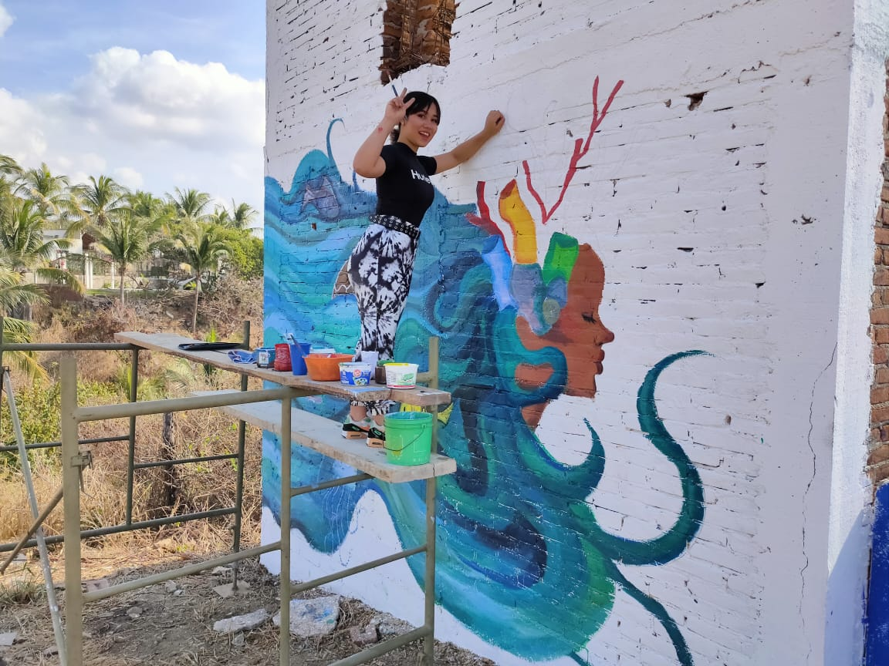
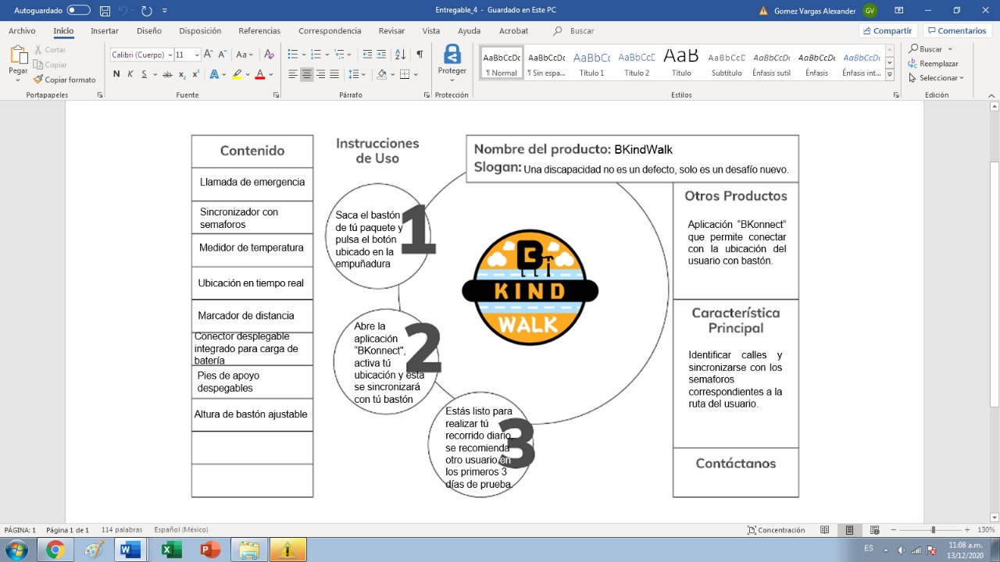
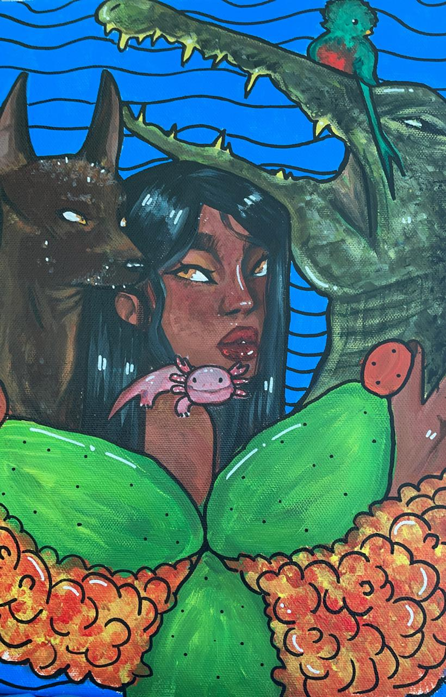

Mis proyectitos:
Mural en el bejuco:

- En este proyecto (que fue individual) me dediqué
a pintar un mural en la playa "en bejuco", en donde se
me asignó pintar algo relacionado a la flora y fauna marina
y decidí representarla con una mujer, la cual, llevaba consigo
una gran melena azul, la cual representaba el oceano y varios
aspectos relacionados en esta.
Hackatón:

- En este proyecto hicimos equipos de 4 personas
a las cuales asignaron hacer un prototipo de algo
que nos ayudara como sociedad con alguna problemática,
así que elegimos hacer un bastón inteligente que ayudara
a las personas ciegas a poder andar por las calles sin algun tipo
de preocupación.
Concurso de dibujo:

- En este proyecto, trabajé sola para hacer un cuadro que tuviera
que ver con la flora y fauna mexicana. Despues de esto, se tenia que entregar
al ayuntamiento para que lo checaran.